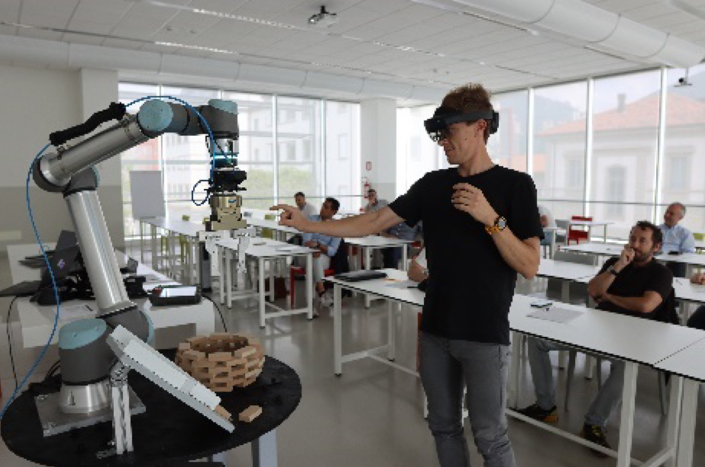
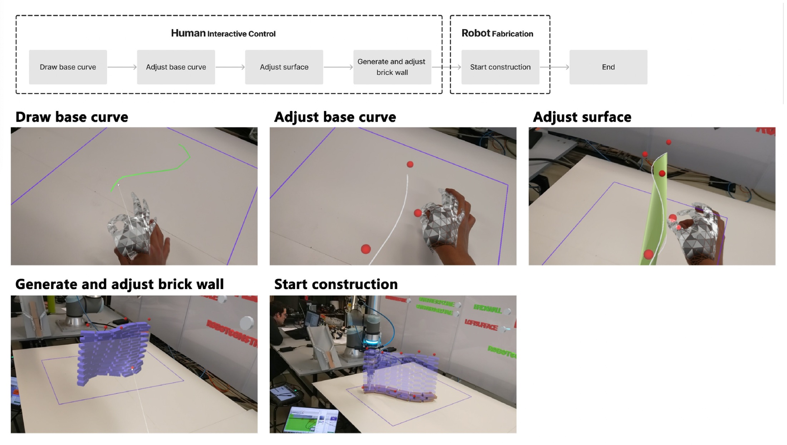
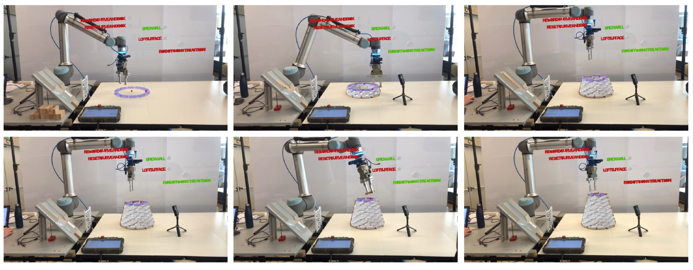
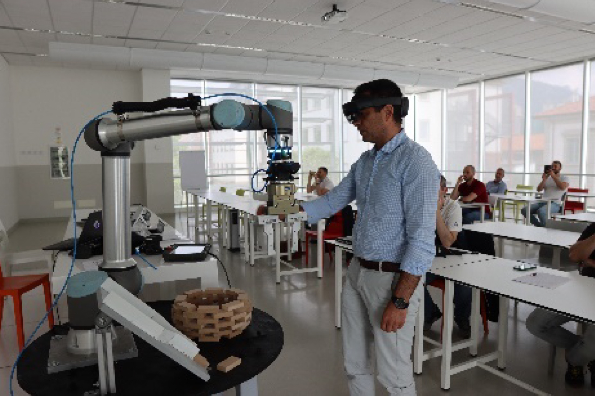
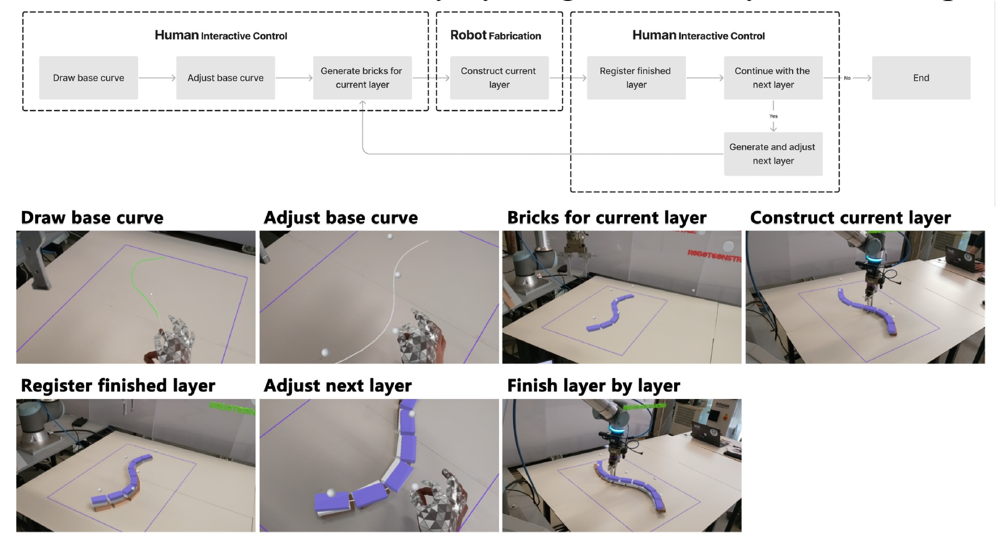

Comparative experiment · Milan · 2023
Human Involvement in
AR-Assisted Bricklaying
How does a construction process change when human judgment remains inside the loop?

Comparing two ways of working.
The experiment compares a conventional workflow, in which design and construction are separated, with an alternating process that combines augmented reality and robotic fabrication. In the second workflow, a conical brick structure was developed without a fully preset final form.
Each layer could be adjusted in real time through human observation. The study uses this comparison to examine how spatial judgment, design agency, and robotic precision can be coordinated during construction.
- Year
- 2023
- Location
- Milan, Italy
Workflow, construction, comparison.
The two workflows were tested through the same material system. Documentation follows the study from interaction logic to robotic construction and then to a direct comparison of how human decisions entered each process.



